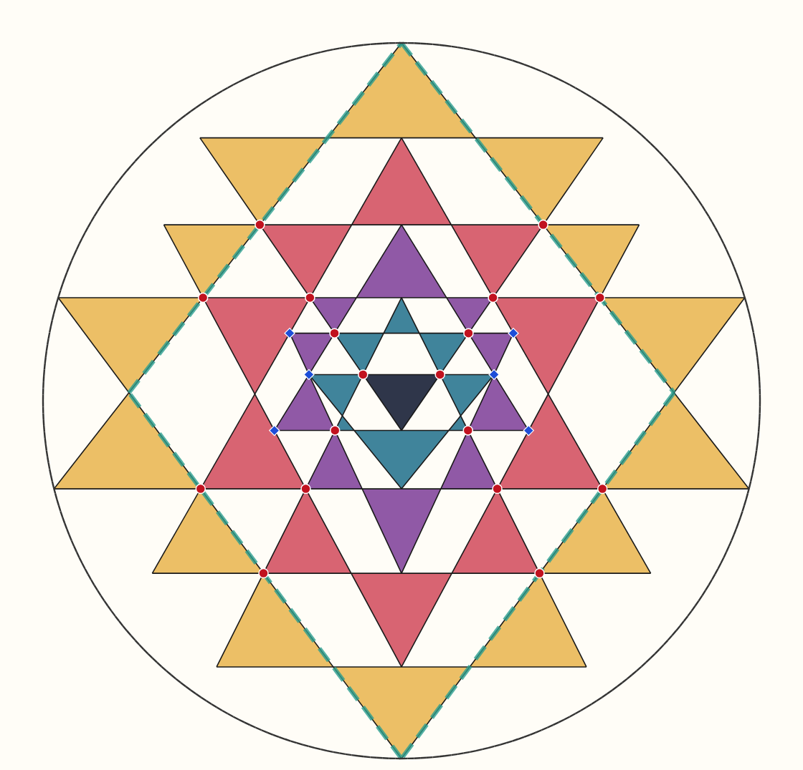
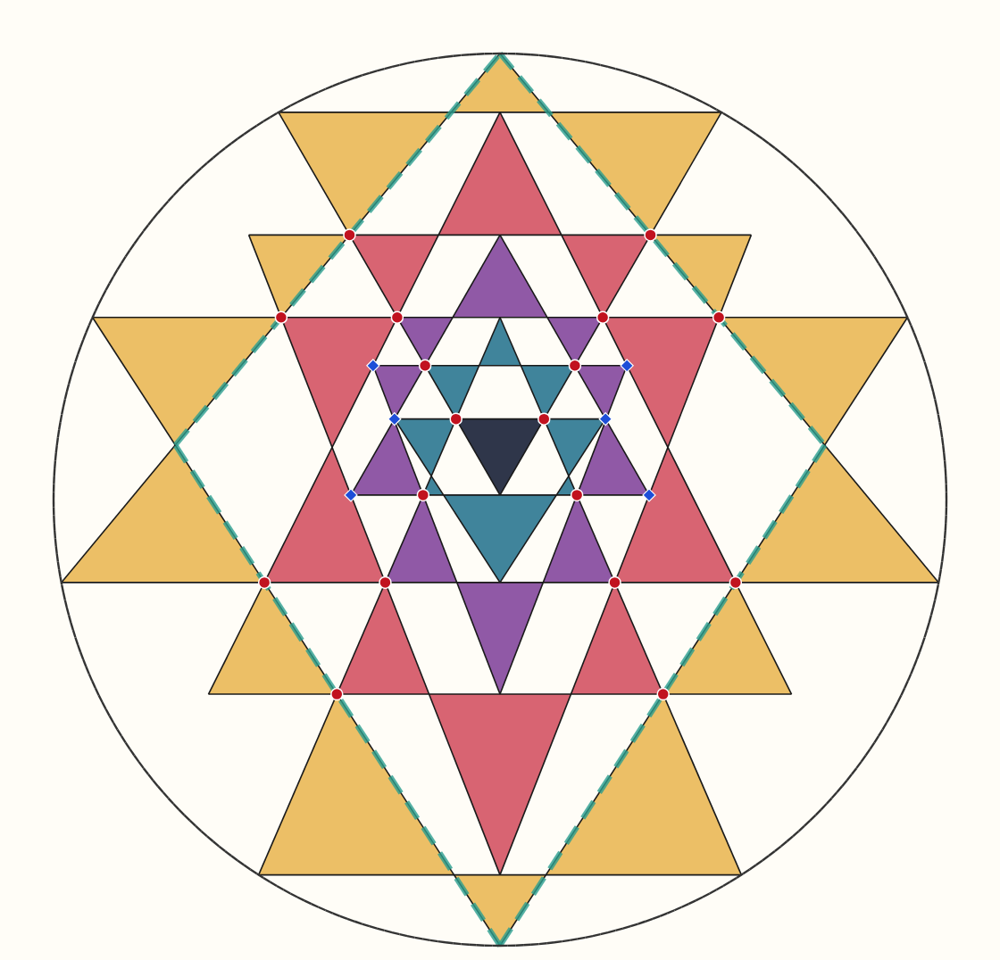
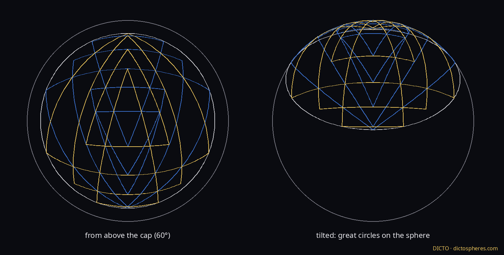
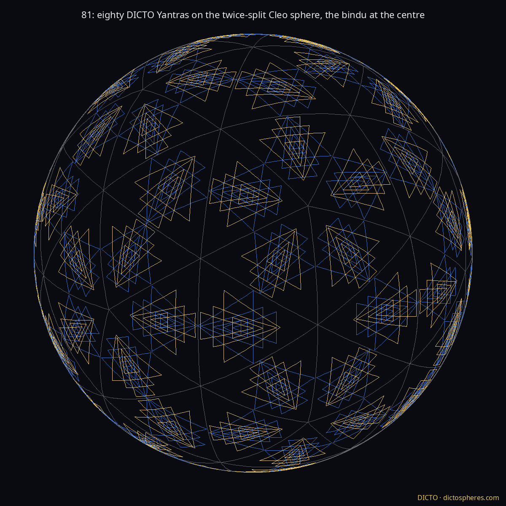

The Best Yantra Renders Nine pictures, one to a page
DICTO · dictospheres.com · 8 November 2026
For DICTO, not for publication. Every picture from the DICTO Yantra (Cleo-Antonius) unless named otherwise; the 3D view and both spheres redrawn from it today.
1 · The DICTO Yantra. Perfect by the rules: both small triangles on the circle, the bindu centred, 43 triangles, 18 marmas, 24 sandhis. Great pair: the Cleo-Antonius.

2 · The most even exact yantra. Perfect to the eye: all 18 meetings and the 43 kept, the regions as equal as the structure allows, the small corners just inside the circle.

3 · The middle way. The most even yantra whose small triangles still touch the circle: all 18 meetings, the 43, corners on the circle; bindu not centred. Evenness 0.80, between the most even (0.61) and the DICTO Yantra (0.87).4 · In three dimensions. Spinning: nine nested cones and the nine marma circles. Still: the tetrahedra. From one of the three positions: the yantra narrowed to cos 30°, every meeting kept.

5 · The spherical yantra. Every line a great circle, every meeting kept; from above the cap and tilted.6 · The Cleo sphere. Twenty DICTO Yantras, one on each face of the Cleo-Icos.

7 · The 81 sphere. Eighty DICTO Yantras on the twice-split Cleo sphere, the bindu at the centre: 81, the Kongōkai number.8 · The gnomon. The yantra and, in its bindu, the next one, endlessly (this version nests at 0.0631; the DICTO Yantra itself at 0.0550).9 · The frame. The stella octangula: a hexagram down its axis, DICTO's upright rhombus from the side.